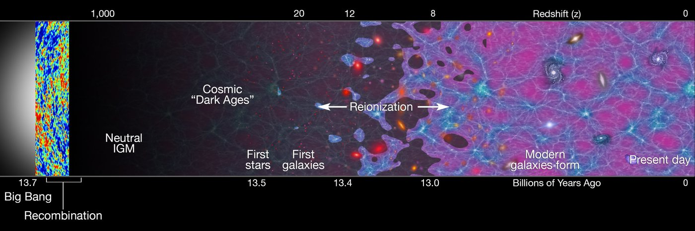
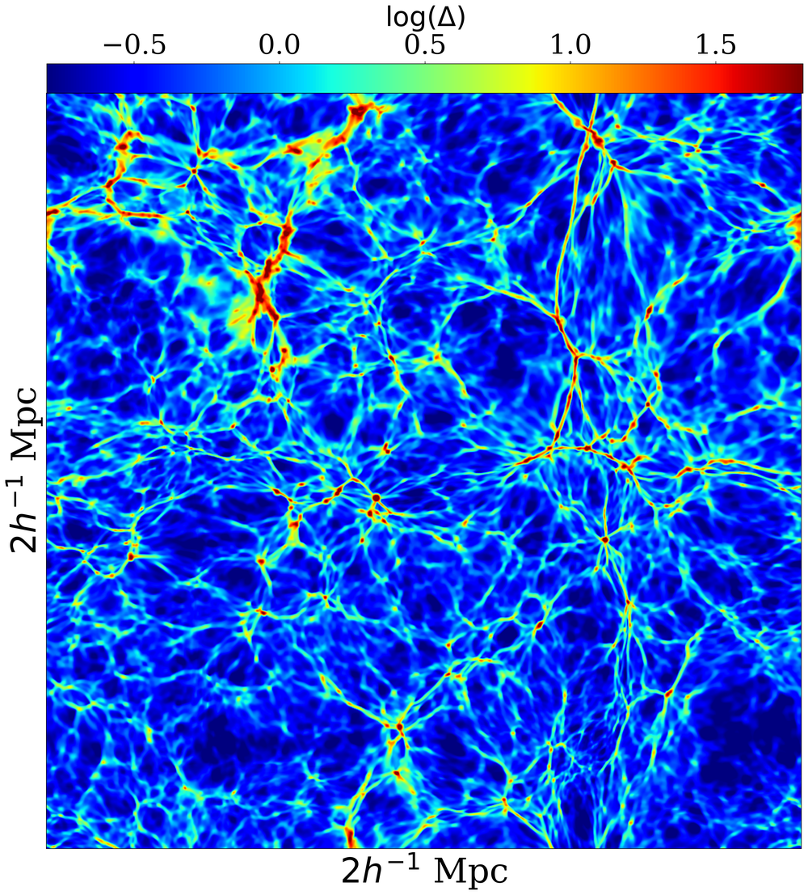
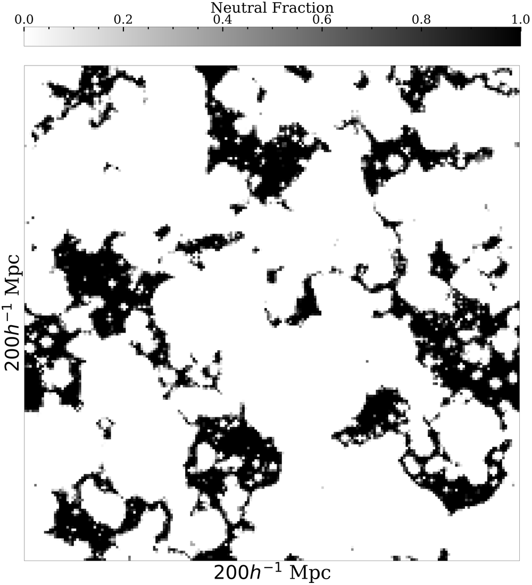
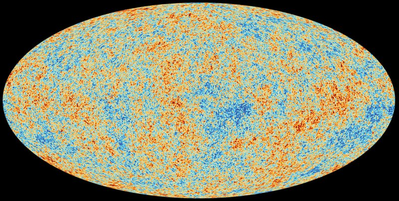
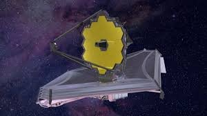
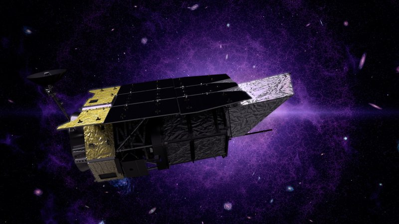
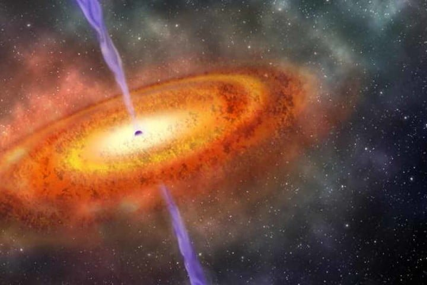
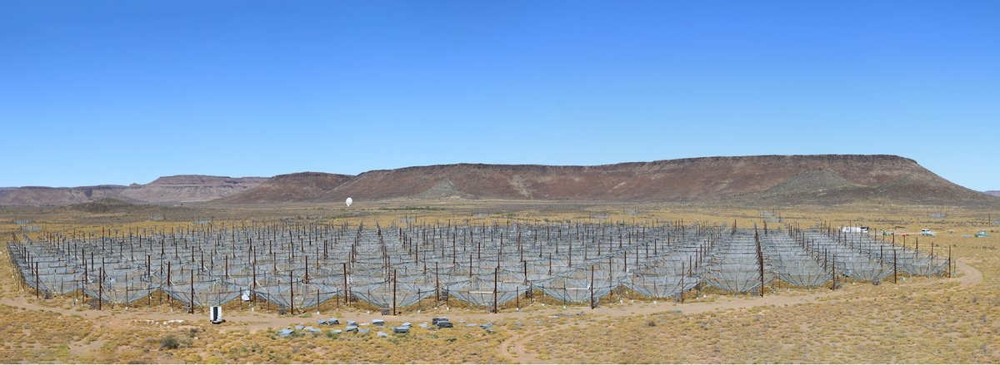
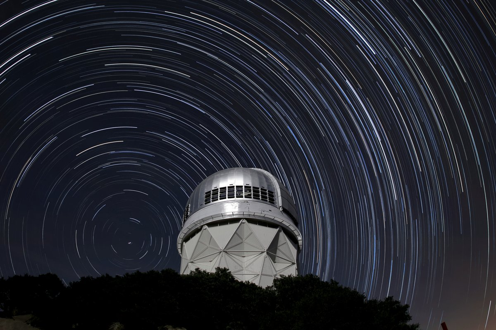
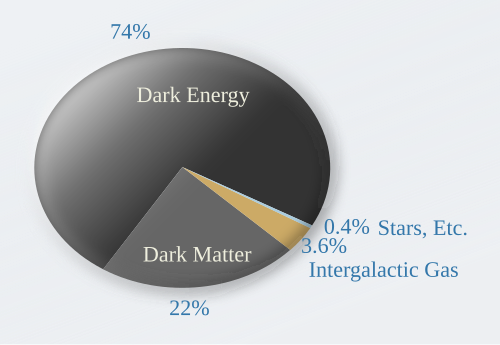

ABOUT ME
I am presently a Senior Postdoctoral Fellow at the Kavli Institute for Cosmology at the University of Cambridge. Before that, I was a Beus Prize Postdoctoral Fellow at Arizona State University, where I worked with Judd Bowman, Rogier Windhorst, Alex Van Engelen, and others at the School of Earth and Space Exploration. I did my Ph.D. at the University of California, Riverside with Anson D'Aloisio.
My primary research focus is cosmic reionization - understanding when and how it happened, the sources responsible for driving it, and the role that the intergalactic medium played in the process. I address these questions with radiative transfer simulations run with my code, FlexRT, which is designed to simulation reionization accurately and effeciently. I am interested in using simulations to interpret a broad range of observational data probing reionization, including high-redshift quasar absorption spectra, high-redshift galaxy observations with JWST, precision measurements of the cosmic microwave background, and high-redshift intensity mapping experiments. I am also interested in developing improved methods for simulating reionization accurately and effeciently. These include new simulation-driven models for the physics at play on small scales in the intergalactic medium during and after reionization.


My Research
The Intergalactic Medium on Small Scales

During reionization, the intergalactic medium (IGM) was subjected to rapid and intense heating by cosmological ionization fronts. These fronts impulsively heated the IGM from ~100 K to ~20000 K on a timescale of ~1 Myr. The subsequent response of dense intergalactic gas clumps to this heating process played a crucial role in determining the physical conditions in the IGM and its effect on the ongoing reionization process thereafter.
The image on the right pictures a slice through a 2 Mpc/h simulation of IGM gas dynamics shown just after the box was re-ionized. The over-dense (red) gas clumps are sites of high recombination rates, and are responsible for absorbing much of the hydrogen-ionizing radiation produced by the first galaxies during reionization. Because of their small (~kpc) sizes and their tendency to self-shield against ionizing radiation, modeling their dynamics and effects on reionization demands high spatial resolution and detailed physics. Click the link above to see my work on this topic.
Simulating Reionization with Flexible Radiative Transfer

Modeling reionization's observables requires modeling the transfer of ionizing radiation through the IGM on 10-100 Mpc scales, characteristic of the large-scale clustering of galaxies. Capturing these scales, whilst also accounting for the ~kpc scales characterizing IGM physics and the yet smaller scales associated with the escape of ionizing radiation from galaxies is a formidable computational task. In addition, exploring and constraining the large parameter space of reionization requires running a large number of simulations.
I have developed a novel radiative transfer code, FlexRT (Flexible Radiative Transfer) designed to meet the challenging demands outlined above. The code uses adaptive ray tracing to enable a fast, flexible, and accurate treatment of the radiative transfer equation. It is also equipped with a sub-grid model for the intergalactic ionizing opacity based on the high-resolution IGM simulations described above. The image on the right shows a map of neutral and ionized regions from a FlexRT simulation in a 200 Mpc/h box. FlexRT is designed with the goal of meeting the simultaneous demands of speed and accuracy required by the next generation of reionization observations.
Interpreting Observations of the High-Redshift Universe

CMBImage: ESA
JWSTImage: NASA
Roman TelescopeImage: NASA
High-redshift quasarImage: phys.org
HERA Radio TelescopeImage: Berkhout+24A chief goal of accurate reionization modeling is to enable accurate interpretation of observations of the high-redshift universe. These can be used to study when and how reionization occurred, and ultimately the properties of the ionizing sources responsible for it. Some of the many observational windows into reionization are pictured on the right. These include the cosmic microwave background, JWST, the forthcoming ROMAN telescope, an artist's impression of a high-redshift quasar, and the HERA radio telescope designed to detect the 21 signal from reionization. These and many other observational windows will continue to deliver a wealth of information about reionization. A central focus of my previous and ongoing work is to leverage the modeling frameworks I have developed to interpret a wide range of observations. Click the link above to learn more.
Reionization as a Tool for Cosmology

DESI (Mayall Telescope)
Reionization is an important ingredient in precision cosmology because it sets the optical depth of the cosmic microwave background - the least well-constrained parameter of the standard cosmological model. Recent measurements of baryon acoustic oscillations by the Dark Energy Spectroscopic Instrument (DESI) have highlighted possible tensions with the CMB, which could be eased if the optical depth is significantly higher than the value measured by Planck. Whether such a high optical depth is allowed, however, depends crucially on what we know about reionization.
The images on the right show the Mayall Telescope, home of DESI, and the composition of the universe that cosmological measurements like these seek to pin down. Constraints on the end of reionization from the Lyman alpha forest change how the optical depth should be interpreted: rather than simply measuring when reionization happened, it becomes a sensitive probe of how long reionization lasted. My recent work explores what reionization observables, such as the forest and the patchy kSZ effect, imply for these cosmological tensions, what kinds of early sources could reconcile them, and how to build fast, accurate models of reionization for use in cosmological analyses. Click the link above to learn more.
Talks & News
Recent & Upcoming Talks
| Date | Title | Venue |
|---|---|---|
| Sep. 2026 | Revealing the High-Redshift Universe with Cosmic Reionization | Invited seminar, Beus Center for Cosmic Foundations, Arizona State University |
| May 2026 | Tau and Turbulence: The importance of reionization at the largest and smallest scales | Invited talk, VICO-CICO-CASSUM Spring 2026 Workshop |
| Mar. 2026 | Tau and Turbulence: Understanding reionization at the largest and smallest scales | Cosmology in the Alps 2026, Les Diablerets, Switzerland |
| Oct. 2025 | Tau and Turbulence: Understanding reionization at the largest and smallest scales | Invited KIPAC Tea Talk, Stanford University |
| Sep. 2025 | Tau and Turbulence: Understanding reionization at the largest and smallest scales | Kaba Kada Conference, Cairns, Australia |
| June 2025 | New constraints on the galactic ionizing efficiency and escape fraction at 2.5 < z < 6 based on quasar absorption spectra | 246th AAS Meeting, Anchorage, Alaska |
| May 20, 2025 | The effect of reionization on small-scale structure in the intergalactic medium | Invited talk, IGM-Galaxy Workshop, Trieste, Italy |
| April 29, 2025 | Revealing the physics of reionization with high-redshift quasars, JWST observations, & simulations of the IGM | DUSC Seminar @ University of Washington |
| Dec. 3, 2024 | Chasing the beginning of reionization in the JWST era | 40th IAP Symposium, Paris, France |
| June 26, 2024 | A tale of three histories: distinguishing reionization scenarios in the JWST era | Cosmic Dawn at High Latitudes Conference, Stockholm, Sweden |
See my CV (linked above) for a complete list
News Highlights
- Oct. 2026: I have joined the Kavli Institute for Cosmology at the University of Cambridge as a Senior Postdoctoral Fellow!
- Oct. 2026: New paper (Lopez+26), led by Garett Lopez, combining Planck with the Lyman-series forests to constrain the midpoint, duration, and asymmetry of reionization. See Tools for Cosmological Inference.
- Aug. 2026: New paper (Cain+26c) showing that if most of JWST's "Little Blue Dots" were accreting at super-Eddington rates, they would reionize helium too early (see Interpreting Observations). Also out: a search for anisotropic screening from reionization in ACT DR6 data (Kramer+26).
- June 2026: Two new papers on reionization and cosmology: a new analytical model for the reionization history and photo-ionization rate (Cain+26b), and a Pop III.1 "flash" that could relieve the BAO-CMB tension (Aggarwal+26). See Reionization as a Tool for Cosmology.
- Apr. 2026: Two undergraduates I advised at ASU published lead-author papers: on a Lyman-alpha emitting galaxy at z = 13 (Cohon+25) and on whether JWST AGN can explain the EDGES 21 cm signal (Nelander+25).
- Mar. 2026: We introduced SAGUARO (Cain+26a), the largest and most comprehensive suite of simulations dedicated to studying gas dynamics in the IGM. See The Intergalactic Medium on Small Scales.
- Jan. 2026: Our discovery of sub-kpc scale turbulence in the IGM driven by reionization, which may grow intergalactic magnetic fields (Cain+25b), was awarded 1st Place in the 2025 Buchalter Cosmology Prize, and was published in Physical Review D! See The Intergalactic Medium on Small Scales.
- Aug. 2025: I received the Beus Center Director's Award for Excellence in Mentoring.
- May 2025: In Cain+25c, we showed that including information about the end of reionization from the Lyman-alpha forest of high-redshift quasars renders the CMB optical depth a sensitive probe of reionization's duration - a key development in interpreting CMB observables.